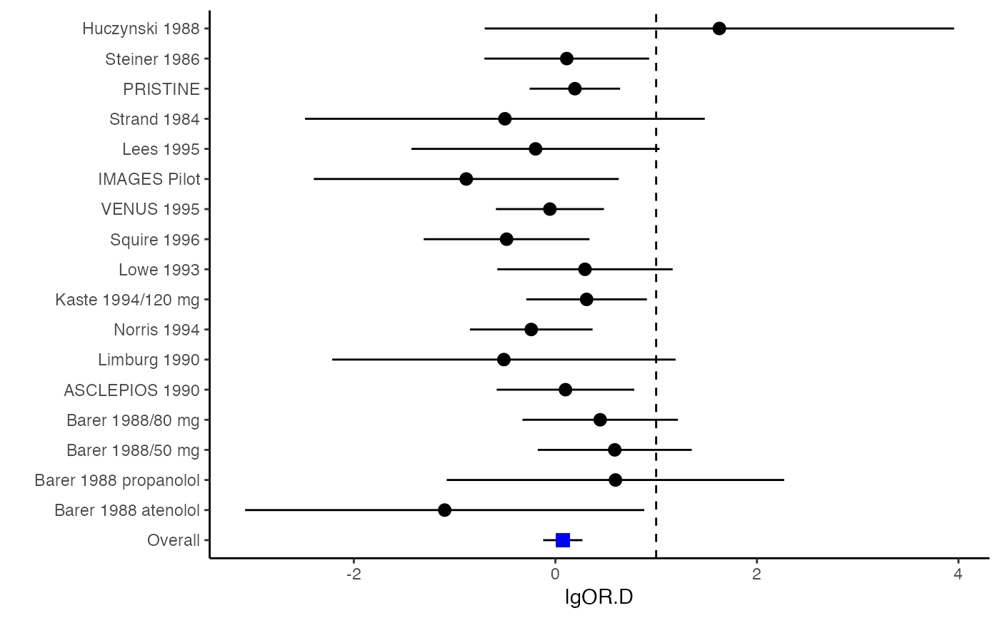

mix.vcov.RdThe function r.vcov computes effect sizes and variance-covariance matrices between effect sizes of the same of different types. Effect sizes include mean difference (MD), standardized mean difference (SMD), log odds ratio (logOR), log risk ratio (logRR), and risk difference (RD). Formulas are in Table I of Wei et al.'s paper (2013).
mix.vcov(d, r, nt, nc, st, sc, n_rt = NA, n_rc = NA, sdt, sdc, type, name = NULL, na.impute = NA)
| d | A \(N \times p\) matrix or data frame with mean differences (MD) and/or standard mean differences (SMD) from the \(N\) studies. |
|---|---|
| r | A \(N\)-dimensional list of \(p \times p\) correlation matrices for the \(p\) outcomes from the \(N\) studies. |
| nt | A \(N \times p\) matrix storing sample sizes in the treatment group reporting the \(p\) outcomes. |
| nc | A matrix defined in a similar way as |
| st | A \(N \times p\) matrix recording number of participants with event for all outcomes (dichotomous) in treatment group. |
| sc | Defined in a similar way as |
| n_rt | A \(N\)-dimensional list of \(p \times p\) matrices storing sample sizes in the treatment group reporting pairwise outcomes in the off-diagonal elements. |
| n_rc | A list defined in a similar way as |
| sdt | A \(N \times p\) matrix storing sample standard deviations for each outcome from treatment group. |
| sdc | A matrix defined in a similar way as |
| type | A \(p\)-dimensional vector indicating types of effect sizes. |
| name | A \(p\)-dimensional vector storing names for the effect sizes. |
| na.impute | Missing values in |
Min Lu
A \(N \times p\) data frame whose columns are computed effect sizes according to the input argument "type". SMD will be converted to Hedges's g (Wei and Higgins, 2013).
A \(N\)-dimensional list of \(p(p+1)/2 \times p(p+1)/2\) matrices of computed variance-covariance matrices.
A \(N \times p(p+1)/2\) matrix whose rows are computed variance-covariance vectors.
Wei, Y., & Higgins, J. (2013). Estimating within study covariances in multivariate meta-analysis with multiple outcomes. Statistics in Medicine, 32(7), 119-1205.
######################################################################### # Example: Geeganage2010 data # Preparing covariances for a multivariate meta-analysis # Choose variable SBP, DBP, DD, D with effect sizes "MD","MD","RD","lgOR" ######################################################################### data(Geeganage2010) ## set the correlation coefficients list r r12 <- 0.71 r13 <- 0.5 r14 <- 0.25 r23 <- 0.6 r24 <- 0.16 r34 <- 0.16 r <- vecTosm(c(r12, r13, r14, r23, r24, r34)) diag(r) <- 1 mix.r <- lapply(1:nrow(Geeganage2010), function(i){r}) ## compute variance co-variances computvcov <- mix.vcov(type = c("MD", "MD", "RD", "lgOR"), d = cbind(Geeganage2010$MD_SBP, Geeganage2010$MD_DBP, NA, NA), sdt = cbind(Geeganage2010$sdt_SBP, Geeganage2010$sdt_DBP, NA, NA), sdc = cbind(Geeganage2010$sdc_SBP, Geeganage2010$sdc_DBP, NA, NA), nt = as.matrix(subset(Geeganage2010, select = c(nt_SBP, nt_DBP, nt_DD, nt_D))), nc = as.matrix(subset(Geeganage2010, select = c(nc_SBP, nc_DBP, nc_DD, nc_D))), st = cbind(NA, NA, Geeganage2010$st_DD, Geeganage2010$st_D), sc = cbind(NA, NA, Geeganage2010$sc_DD, Geeganage2010$sc_D), r = mix.r, name = c("MD.SBP", "MD.DBP", "RD.DD", "lgOR.D")) # save different effect sizes in y y <- computvcov$ef head(y)#> MD.SBP MD.DBP RD.DD lgOR.D #> 1 -2.47 -3.44 0.00000000 -1.0986123 #> 2 1.61 -0.34 0.18750000 0.5959834 #> 3 -8.16 -6.44 0.02554455 0.5892102 #> 4 -3.17 -3.41 0.04000000 0.4444945 #> 5 -0.15 -2.39 0.01920750 0.1000835 #> 6 -9.83 1.93 -0.25000000 -0.5108256# save variances and covariances of all the effect sizes in a matrix S S <- computvcov$matrix.vcov S[1, ]#> var_MD.SBP cov_MD.SBP_MD.DBP cov_MD.SBP_RD.DD cov_MD.SBP_lgOR.D var_MD.DBP #> 1 87.98831 34.81409 0.9245278 2.278204 27.85141 #> cov_MD.DBP_RD.DD cov_MD.DBP_lgOR.D var_RD.DD cov_RD.DD_lgOR.D var_lgOR.D #> 1 0.6207 0.7907191 0.040625 0.02741618 1.020833## fixed-effect model MMA_FE <- summary(metafixed(y = y, Slist = computvcov$list.vcov)) ####################################################################### # Running random-effects model using package "mvmeta" or "metaSEM" ####################################################################### # Restricted maximum likelihood (REML) estimator from the mvmeta package library(mvmeta) mvmeta_RE <- summary(mvmeta(cbind(MD.SBP, MD.DBP, RD.DD, lgOR.D) ~., S = S, data = y, method = "reml")) mvmeta_RE#> Call: mvmeta(formula = cbind(MD.SBP, MD.DBP, RD.DD, lgOR.D) ~ ., S = S, #> data = y, method = "reml") #> #> Multivariate random-effects meta-analysis #> Dimension: 4 #> Estimation method: REML #> #> Fixed-effects coefficients #> Estimate Std. Error z Pr(>|z|) 95%ci.lb 95%ci.ub #> MD.SBP -2.2985 1.6172 -1.4212 0.1552 -5.4682 0.8712 #> MD.DBP -2.5155 1.1940 -2.1067 0.0351 -4.8558 -0.1752 * #> RD.DD 0.0135 0.0195 0.6928 0.4885 -0.0247 0.0517 #> lgOR.D 0.0836 0.1004 0.8327 0.4050 -0.1132 0.2804 #> --- #> Signif. codes: 0 ‘***’ 0.001 ‘**’ 0.01 ‘*’ 0.05 ‘.’ 0.1 ‘ ’ 1 #> #> Between-study random-effects (co)variance components #> Structure: General positive-definite #> Std. Dev Corr #> MD.SBP 4.6739 MD.SBP MD.DBP RD.DD #> MD.DBP 3.9292 0.9776 #> RD.DD 0.0218 0.3666 0.1627 #> lgOR.D 0.0454 0.7369 0.5782 0.8991 #> #> Multivariate Cochran Q-test for heterogeneity: #> Q = 137.4078 (df = 64), p-value = 0.0000 #> I-square statistic = 53.4% #> #> 17 studies, 68 observations, 4 fixed and 10 random-effects parameters #> logLik AIC BIC #> -92.2480 212.4959 242.7203 #># maximum likelihood estimators from the metaSEM package library(metaSEM) metaSEM_RE <- summary(meta(y = y, v = S)) metaSEM_RE#> #> Call: #> meta(y = y, v = S) #> #> 95% confidence intervals: z statistic approximation (robust=FALSE) #> Coefficients: #> Estimate Std.Error lbound ubound z value Pr(>|z|) #> Intercept1 -1.2594e+00 1.1408e+01 -2.3619e+01 2.1100e+01 -0.1104 0.9121 #> Intercept2 -1.6238e+00 1.5133e+01 -3.1283e+01 2.8036e+01 -0.1073 0.9145 #> Intercept3 1.3275e-02 5.8909e+02 -1.1546e+03 1.1546e+03 0.0000 1.0000 #> Intercept4 5.9969e-02 1.2581e+02 -2.4653e+02 2.4665e+02 0.0005 0.9996 #> Tau2_1_1 6.0518e-01 1.0287e+02 -2.0102e+02 2.0223e+02 0.0059 0.9953 #> Tau2_2_1 1.3066e+00 2.5264e+02 -4.9385e+02 4.9647e+02 0.0052 0.9959 #> Tau2_2_2 1.2662e+00 1.5463e+02 -3.0181e+02 3.0434e+02 0.0082 0.9935 #> Tau2_3_1 -6.0376e-03 1.1486e+04 -2.2513e+04 2.2513e+04 0.0000 1.0000 #> Tau2_3_2 -1.9688e-02 1.4137e+04 -2.7709e+04 2.7709e+04 0.0000 1.0000 #> Tau2_3_3 1.5113e-03 NA NA NA NA NA #> Tau2_4_1 -4.5208e-02 2.4796e+03 -4.8599e+03 4.8599e+03 0.0000 1.0000 #> Tau2_4_2 6.2169e-03 3.0646e+03 -6.0065e+03 6.0065e+03 0.0000 1.0000 #> Tau2_4_3 1.0743e-02 NA NA NA NA NA #> Tau2_4_4 2.2724e-03 1.4893e+04 -2.9189e+04 2.9189e+04 0.0000 1.0000 #> #> Q statistic on the homogeneity of effect sizes: 137.4078 #> Degrees of freedom of the Q statistic: 64 #> P value of the Q statistic: 2.790395e-07 #> #> Heterogeneity indices (based on the estimated Tau2): #> Estimate #> Intercept1: I2 (Q statistic) 0.0340 #> Intercept2: I2 (Q statistic) 0.2017 #> Intercept3: I2 (Q statistic) 0.1992 #> Intercept4: I2 (Q statistic) 0.0127 #> #> Number of studies (or clusters): 17 #> Number of observed statistics: 68 #> Number of estimated parameters: 14 #> Degrees of freedom: 54 #> -2 log likelihood: 194.1707 #> OpenMx status1: 5 ("0" or "1": The optimization is considered fine. #> Other values may indicate problems.)#> Warning: OpenMx status1 is neither 0 or 1. You are advised to 'rerun' it again.############################################################## # Plotting the result: ############################################################## obj <- MMA_FE # obj <- mvmeta_RE # obj <- metaSEM_RE # pdf("CI.pdf", width = 4, height = 7) plotCI(y = computvcov$ef, v = computvcov$list.vcov, name.y = NULL, name.study = Geeganage2010$studyID, y.all = obj$coefficients[,1], y.all.se = obj$coefficients[,2], hline = c(0, 0, 0, 1))#> $`Plotting MD.SBP`#> #> $`Plotting MD.DBP`#> #> $`Plotting RD.DD`#> #> $`Plotting lgOR.D`#># dev.off()